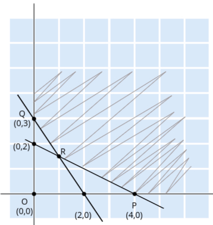

Linear Programming Problem (LPP)
- What is LPP?
Linear Programming Problem (LPP) is a mathematical technique used to achieve the best possible
outcome in a given situation, often involving maximization of profits or minimization of costs.
Think about running a business—what is the main goal? The primary objective is usually profit
maximization or cost minimization.
For example, a company might want to maximize its profit or minimize its costs given a set of limitations or resources. In LPP, the objective function is the formula that represents this goal. - Objective Function:
In LPP, we typically encounter two types of problems:
- Maximization: An objective function might look like Z = x + 2y, where the goal is to maximize Z (profit, output, etc.).
- Minimization: Another example could be Z = 2x + 3y, where the objective is to minimize Z (cost, time, etc.).
- Constraints:
Every business operates under certain limitations, such as limited resources like manpower, money,
time, land, or raw materials. These limitations are known as constraints in LPP.
Constraints are represented as inequalities because they indicate the limits within which the decision variables must operate. For example:
2x + 3y ≥ 5 (resource must be more than or equal to 5)
x + y ≤ 7 (resource must be less than or equal to 7) - Non-negativity Restriction:
In most real-world scenarios, the decision variables (like products, resources, etc.) cannot be
negative. Therefore, in LPP, we assume:
x ≥ 0, y ≥ 0
This condition ensures that the solution is realistic and practical. - Summary of LPP Components:
In summary, a Linear Programming Problem consists of two main components:
- Objective Function: This is the function you aim to maximize or minimize (profit, cost, time, etc.).
- Constraints: These are the limitations or restrictions on the resources available, usually in the form of inequalities.
Graphical Method to Solve LPP
Problem Statement:
Maximize Z = 3x1 + 4x2
Subject to the constraints:
x1 + 2x2 ≤ 4
3x1 + 2x2 ≤ 6
x1, x2 ≥ 0 (Non-negativity constraint)
- Step 1: Find the coordinates
We start by finding the points where the constraints intersect the axes, as these points will help us plot the lines representing the constraints.
For the constraint x1 + 2x2 ≤ 4:
To find the points where the line intersects the x1 and x2 axes:- If x2 = 0, then x1 = 4, giving the point (4, 0).
- If x1 = 0, then x2 = 2, giving the point (0, 2).
- If x2 = 0, then x1 = 2, giving the point (2, 0).
- If x1 = 0, then x2 = 3, giving the point (0, 3).
- Step 2: Draw the lines and identify the feasible region
We now plot the lines x1 + 2x2 = 4 and 3x1 + 2x2 = 6 on a graph using the points found earlier.
The feasible region is the area where both constraints overlap, and it represents the possible values of x1 and x2 that satisfy all constraints.
Since both constraints have ≤, the feasible region will be the area below both lines, towards the origin (0, 0).
- Step 3: Identify the corner points of the feasible region
The optimal solution of an LPP in the graphical method will always lie at one of the corner points (vertices) of the feasible region.
The corner points in this example are:- O: (0, 0) – the origin
- A: (2, 0) – where 3x1 + 2x2 = 6 intersects the x1-axis
- C: (0, 2) – where x1 + 2x2 = 4 intersects the x2-axis
- B: The intersection of the two constraints
x1 + 2x2 = 4 and
3x1 + 2x2 = 6. To find B, we solve both
equations
simultaneously:
Solve the system:
x1 + 2x2 = 4
3x1 + 2x2 = 6
Subtract the first equation from the second:
(3x1 + 2x2) - (x1 + 2x2) = 6 - 4
This simplifies to:
2x1 = 2, so x1 = 1.
Substitute x1 = 1 into x1 + 2x2 = 4:
1 + 2x2 = 4, so x2 = 3/2.
The intersection point B is (1, 3/2).
- Step 4: Evaluate the objective function at each corner point
Now, we substitute the coordinates of each corner point into the objective function Z = 3x1 + 4x2 to find the value of Z at each point:- At O: Z = 3(0) + 4(0) = 0
- At A: Z = 3(2) + 4(0) = 6
- At B: Z = 3(1) + 4(3/2) = 3 + 6 = 9
- At C: Z = 3(0) + 4(2) = 8
- Step 5: Determine the optimal solution
Since the problem is a maximization problem, the optimal solution will be the point that gives the maximum value of Z.
From the calculations, we see that the maximum value of Z is 9, which occurs at point B (1, 3/2).
Thus, the optimal solution is:- x1 = 1
- x2 = 3/2
- Step 6: Minimization (if required)
If we were tasked with minimizing Z instead of maximizing it, the minimum value would occur at the origin O (0, 0), where Z = 0.
Graphical Method to Solve LPP (Minimization Problem)
Problem Statement:
Minimize Z = 3x1 + 4x2
Subject to the constraints:
x1 + 2x2 ≥ 4
3x1 + 2x2 ≥ 6
x1, x2 ≥ 0 (Non-negativity constraint)
- Step 1: Find the coordinates
Since the constraints have “≥” signs, the feasible region will be away from the origin.
To plot the constraints, we first find the points where the lines intersect the axes.
For the constraint x1 + 2x2 ≥ 4:- If x2 = 0, then x1 = 4, giving the point (4, 0).
- If x1 = 0, then x2 = 2, giving the point (0, 2).
- If x2 = 0, then x1 = 2, giving the point (2, 0).
- If x1 = 0, then x2 = 3, giving the point (0, 3).
- Step 2: Draw the lines and identify the feasible region
We now plot the lines x1 + 2x2 = 4 and 3x1 + 2x2 = 6 using the points found earlier.
The feasible region in this case will be above both lines (away from the origin), as the constraints are in the form of “≥”.
The common area between the two constraints will give us the feasible region where both constraints are satisfied.
 - Step 3: Identify the corner points of the feasible region
Just like in the maximization case, the optimal solution for a minimization problem also lies at one of the corner points (vertices) of the feasible region.
The corner points of the feasible region are:- P: (4, 0) – where x1 + 2x2 = 4 intersects the x1-axis
- Q: (0, 3) – where 3x1 + 2x2 = 6 intersects the x2-axis
- R: The intersection of the two constraints. To find this point, we
solve both equations simultaneously:
Solve the system:
x1 + 2x2 = 4
3x1 + 2x2 = 6
Subtract the first equation from the second:
(3x1 + 2x2) - (x1 + 2x2) = 6 - 4
This simplifies to:
2x1 = 2, so x1 = 1.
Substitute x1 = 1 into x1 + 2x2 = 4:
1 + 2x2 = 4, so x2 = 3/2.
The intersection point R is (1, 3/2).
- Step 4: Evaluate the objective function at each corner point
Now we substitute the coordinates of each corner point into the objective function Z = 3x1 + 4x2 to find the value of Z at each point:- At P: Z = 3(4) + 4(0) = 12
- At Q: Z = 3(0) + 4(3) = 12
- At R: Z = 3(1) + 4(3/2) = 3 + 6 = 9
- Step 5: Determine the optimal solution
Since the problem is a minimization problem, the optimal solution will be the point that gives the minimum value of Z.
From the calculations, we see that the minimum value of Z is 9, which occurs at point R (1, 3/2).
Thus, the optimal solution is:- x1 = 1
- x2 = 3/2
- Note: Unbounded Solution (if the question was for maximization)
If this problem were a maximization problem, the solution would be unbounded.
This is because, as we move away from the origin in the feasible region, the value of Z increases indefinitely.
Thus, there is no maximum value for Z, and we say the solution is unbounded.
Alternative solutions
Problem Statement:
Maximize Z = 3x1 + 2x2
Subject to the constraints:
x1 + 2x2 ≤ 4
3x1 + 2x2 ≤ 6
x1, x2 ≥ 0 (Non-negativity constraint)
- Step 1: Find the coordinates
We start by finding the points where the constraints intersect the axes, which will help us plot the lines representing the constraints. For the constraint x1 + 2x2 ≤ 4:
To find the points where the line intersects the x1 and x2 axes:- If x2 = 0, then x1 = 4, giving the point (4, 0).
- If x1 = 0, then x2 = 2, giving the point (0, 2).
- If x2 = 0, then x1 = 2, giving the point (2, 0).
- If x1 = 0, then x2 = 3, giving the point (0, 3).
- Step 2: Draw the lines and identify the feasible region
We now plot the lines x1 + 2x2 = 4 and 3x1 + 2x2 = 6 on a graph using the points found earlier.
The feasible region is the area where both constraints overlap, representing the possible values of x1 and x2 that satisfy all constraints.
Since both constraints have ≤, the feasible region will be the area below both lines, towards the origin (0, 0).
- Step 3: Identify the corner points of the feasible region
The optimal solution of an LPP in the graphical method will always lie at one of the corner points (vertices) of the feasible region.
The corner points in this example are:- O: (0, 0) – the origin
- A: (2, 0) – where 3x1 + 2x2 = 6 intersects the x1-axis
- C: (0, 2) – where x1 + 2x2 = 4 intersects the x2-axis
- B: The intersection of the two constraints
x1 + 2x2 = 4 and
3x1 + 2x2 = 6. To find B, we solve both
equations
simultaneously:
Solve the system:
x1 + 2x2 = 4
3x1 + 2x2 = 6
Subtract the first equation from the second:
(3x1 + 2x2) - (x1 + 2x2) = 6 - 4
This simplifies to:
2x1 = 2, so x1 = 1.
Substitute x1 = 1 into x1 + 2x2 = 4:
1 + 2x2 = 4, so x2 = 3/2.
The intersection point B is (1, 3/2).
- Step 4: Evaluate the objective function at each corner point
Now, we substitute the coordinates of each corner point into the objective function Z = 3x1 + 2x2 to find the value of Z at each point:- At O: Z = 3(0) + 2(0) = 0
- At A: Z = 3(2) + 2(0) = 6
- At B: Z = 3(1) + 2(3/2) = 3 + 3 = 6
- At C: Z = 3(0) + 2(2) = 4
- Step 5: Determine the optimal solution
In this case, we have two points (A and B) that give the same maximum value of Z:- A (2, 0): Z = 6
- B (1, 3/2): Z = 6
- Step 6: Discuss the type of solution
Since both points A and B yield the same maximum value for Z (which is 6), we can conclude that:- This problem has alternative solutions, as there are multiple combinations of x1 and x2 that maximize the objective function.
- Moreover, if we extend the feasible region further, we may find that there are infinite solutions along the line segment connecting points A and B. Hence, the solution can also be described as having infinite optimal solutions.
Graphical Method to Solve LPP (No Solution Case)
Problem Statement:
Maximize Z = 6x1 + 4x2
Subject to the constraints:
2x1 + 4x2 ≤ 4
4x1 + 8x2 ≥ 16
x1, x2 ≥ 0 (Non-negativity constraint)
- Step 1: Find the coordinates
We start by finding the points where the constraints intersect the axes.
For the constraint 2x1 + 4x2 ≤ 4:
To find the points where the line intersects the x1 and x2 axes:- If x2 = 0, then 2x1 = 4, giving the point (2, 0).
- If x1 = 0, then 4x2 = 4, giving the point (0, 1).
To find the points where the line intersects the axes:- If x2 = 0, then 4x1 = 16, giving the point (4, 0).
- If x1 = 0, then 8x2 = 16, giving the point (0, 2).
- Step 2: Draw the lines and identify the feasible region
We now plot the lines 2x1 + 4x2 = 4 and 4x1 + 8x2 = 16 on a graph using the points found earlier.
The feasible region for the first constraint is the area below the line, while for the second constraint, it is the area above the line.
Since one constraint is ≤ and the other is ≥, we are looking for an intersection of these two regions.
- Step 3: Analyze the feasible region
Upon examining the plotted constraints, we see that there is no overlap between the feasible regions defined by the two constraints.
Thus, there is no common area where both conditions are satisfied simultaneously. This indicates that:- The problem has no feasible solution.
- The constraints are contradictory, as one requires values below a certain level while the other requires values above a certain level.
- Step 4: Conclusion
In this case, since there is no feasible region where all constraints are satisfied, the linear programming problem does not have a solution.
It illustrates the importance of properly formulating constraints to ensure they can coexist without conflict in optimization problems.
Simplex Method to Solve LPP
Maximize Z = 5x1 + 3x2
Subject to the constraints:
3x1 + 5x2 ≤ 15
5x1 + 2x2 ≤ 10
x1, x2 ≥ 0
- To solve an LPP using the Simplex Method, we must ensure that the objective function is in maximization form. If it is a minimization problem, we first convert it to a maximization problem.
- If the given objective function is in the form of minimization (Min Z), we can convert it
into a maximization problem by using the following relationship:
- Max Z' = -Min Z
- For example, if the objective is to minimize Z = 5x1 + 3x2, we
convert
it to:
- Max Z' = - (5x1 + 3x2)
- This simplifies to: Max Z' = -5x1 - 3x2
- Now, we can proceed to solve the maximization problem using the Simplex Method.
- Next, we need to balance the constraints. For constraints with ≤ signs, we add slack variables to convert inequalities into equalities. For example, if we have a ≤ constraint, we add a slack variable. Similarly, if we have a ≥ constraint, we subtract a surplus variable to achieve equality.
- Now, converting the given problem:
Maximize Z = 5x1 + 3x2 + 0x3 + 0x4 (introducing slack variables x3 and x4)
Subject to:
3x1 + 5x2 + x3 = 15
5x1 + 2x2 + x4 = 10
All variables x1, x2, x3, x4 ≥ 0 - The variables x3 and x4 are known as the basic variables, as they form the identity matrix in the system of equations. The basic variables usually include the slack variables we introduced. The objective now is to make the decision variables (x1, x2) the basic variables through iterations.
- We now create the initial Simplex tableau as follows:
| Cj | 5 | 3 | 0 | 0 | CB | Xb | B | x1 | x2 | x3 | x4 | ---------------------------------------------- 0 | x3 | 15 | 3 | 5 | 1 | 0 | 0 | x4 | 10 | 5 | 2 | 0 | 1 |- CB represents the cost of the basic variables in the objective function (initially zero for slack variables).
- Xb represents the basic variables.
- Cj represents the cost coefficients of the decision variables x1, x2, and slack variables x3, x4 in the objective function.
- Next, we perform the Simplex iteration. We want to bring x1 and x2 into the basis:
| Cj | 5 | 3 | 0 | 0 | CB | Xb | B | x1 | x2 | x3 | x4 | ---------------------------------------------- 0 | x3 | 15 | 3 | 5 | 1 | 0 | (Row 1) 0 | x4 | 10 | 5 | 2 | 0 | 1 | (Row 2) ---------------------------------------------- Zj | | 0 | 0 | 0 | 0 | Cj | | 5 | 3 | 0 | 0 | Zj - Cj | | -5 | -3 | 0 | 0 |To calculate Zj, we use the formula Zj = CB × B, where:
- CB is the cost coefficient of the basic variables in the basis (here, x3 and x4).
- B is the column for the variable we are calculating Zj for.
Zj(x1) = (CB(row1) × B(row1,x1)) + (CB(row2) × B(row2,x1))
Substituting the values:
Zj(x1) = (0 × 3) + (0 × 5) = 0
Similarly, Zj for x2, x3, and x4 will be calculated. In this iteration, since all the current basic variables (x3 and x4) have cost coefficients of 0, all Zj values will be 0.After calculating Zj, we compute Zj - Cj, which shows the difference between the calculated and actual costs. The most negative value, -5 (in the x1 column), indicates that x1 should enter the basis.
To decide which variable to remove from the basis (x3 or x4), we compute the minimum ratio of b values and the coefficients in the x1 column:
| Cj | 5 | 3 | 0 | 0 | CB | Xb | b | x1 | x2 | x3 | x4 | min ratio -------------------------------------------------------- 0 | x3 | 15 | 3 | 5 | 1 | 0 | 15/3 = 5 0 | x4 | 10 | 5 | 2 | 0 | 1 | 10/5 = 2 → smallest ratioAs 2 is the smallest ratio, x4 is the outgoing variable, and x1 will replace x4 in the basis.
- Now, we pivot on the key element (5 in the x1 column, row 2). After performing row
operations, the updated tableau looks like this:
| Cj | 5 | 3 | 0 | 0 | CB | Xb | b | x1 | x2 | x3 | x4 | ---------------------------------------------- 0 | x3 | 9 | 0 | 19/5 | 1 | -3/5 | (Row 1) 5 | x1 | 2 | 1 | 2/5 | 0 | 1/5 | (Row 2) ---------------------------------------------- - Next, we compute Zj - Cj again:
| Cj | 5 | 3 | 0 | 0 | CB | Xb | b | x1 | x2 | x3 | x4 | min ratio -------------------------------------------------------- 0 | x3 | 9 | 0 | 19/5 | 1 | -3/5 | 45/19 → smallest ratio 5 | x1 | 2 | 1 | 2/5 | 0 | 1/5 | 10/2 -------------------------------------------------------- Zj | | 5 | 2 | 0 | 1 | Cj | | 5 | 3 | 0 | 0 | Zj - Cj | | 0 | -1 | 0 | 1 | - After performing the row operations, the final tableau is:
| Cj | 5 | 3 | 0 | 0 | CB | Xb | b | x1 | x2 | x3 | x4 | -------------------------------------------------------- 3 | x2 | 45/19 | 0 | 1 | 5/19 |-3/19 | (Row 1) new 5 | x1 | 20/19 | 1 | 0 | -2/19 | 5/19 | (Row 2) -------------------------------------------------------- Zj | | 5 | 3 | 5/19 | 16/19 Cj | | 5 | 3 | 0 | 0 Zj - Cj | | 0 | 0 | 5/19 | 16/19 - Finally, the optimal solution is:
x1 = 20/19, x2 = 45/19
Optimal value of Z = 5(20/19) + 3(45/19) = 225/19 ≈ 11.84
Maximize Z = 3x1 + 2x2 + 5x3
Subject to the constraints:
x1 + x2 + x3 ≤ 9
2x1 + 3x2 + 5x3 ≤ 30
2x1 - x2 - x3 ≤ 8
xi ≥ 0
- Convert the constraints by adding slack variables:
Maximize Z = 3x1 + 2x2 + 5x3 + 0x4 + 0x5 + 0x6
Subject to:
x1 + x2 + x3 + x4 = 9
2x1 + 3x2 + 5x3 + x5 = 30
2x1 - x2 - x3 + x6 = 8
xi ≥ 0 - Create the initial Simplex tableau:
| Cj | 3 | 2 | 5 | 0 | 0 | 0 | CB | Xb | b | x1 | x2 | x3 | x4 | x5 | x6 | ---------------------------------------------------------------------- 0 | x4 | 9 | 1 | 1 | 1 | 1 | 0 | 0 | (Row 1) 0 | x5 | 30 | 2 | 3 | 5 | 0 | 1 | 0 | (Row 2) 0 | x6 | 8 | 2 | -1 | -1 | 0 | 0 | 1 | (Row 3) - Perform the Simplex iteration by identifying the entering and exiting variables:
| Cj | 3 | 2 | 5 | 0 | 0 | 0 | CB | Xb | b | x1 | x2 | x3 | x4 | x5 | x6 | ------------------------------------------------------------------------ 0 | x4 | 9 | 1 | 1 | 1 | 1 | 0 | 0 | (Row 1) 0 | x5 | 30 | 2 | 3 | 5 | 0 | 1 | 0 | (Row 2) 0 | x6 | 8 | 2 | -1 | -1 | 0 | 0 | 1 | (Row 3) ------------------------------------------------------------------------ Zj | | 0 | 0 | 0 | 0 | 0 | 0 | Cj | | 3 | 2 | 5 | 0 | 0 | 0 | Zj - Cj | | -3 | -2 | -5 | 0 | 0 | 0 |
Row 1: 9/1 = 9
Row 2: 30/5 = 6 (smallest ratio)
Row 3: 8/-1 (ignored because it’s negative)
Thus, x5 exits, and x3 replaces x5 in the basis. - Perform the pivot on the key element (5 in Row 2, x3 column), and update the tableau:
for row 2 we are dividing it by 5
for row 1 we are doing row 1 - row 2 (new)
for row 3 we are doing row 3 + row 2 (new)| Cj | 3 | 2 | 5 | 0 | 0 | 0 | CB | Xb | b | x1 | x2 | x3 | x4 | x5 | x6 | ------------------------------------------------------------------- 0 | x4 | 3 | 3/5| 2/5| 0 | 1 | -1/5| 0 | (Row 1) 5 | x3 | 6 | 2/5| 3/5| 1 | 0 | 1/5| 0 | (Row 2) 0 | x6 | 14 | 12/5| -2/5| 0 | 0 | 1/5| 1 | (Row 3) -------------------------------------------------------------------- - Compute Zj - Cj again:
| Cj | 3 | 2 | 5 | 0 | 0 | 0 | CB | Xb | b | x1 | x2 | x3 | x4 | x5 | x6 | --------------------------------------------------------------------- 0 | x4 | 3 | 3/5| 2/5| 0 | 1 | -1/5| 0 | (Row 1) 5 | x3 | 6 | 2/5| 3/5| 1 | 0 | 1/5| 0 | (Row 2) 0 | x6 | 14 | 12/5| -2/5| 0 | 0 | 1/5| 1 | (Row 3) --------------------------------------------------------------------- Zj | | 2 | 3 | 5 | 0 | 1 | 0 | Cj | | 3 | 2 | 5 | 0 | 0 | 0 | Zj - Cj | | -1 | 1 | 0 | 0 | 1 | 0 |
Row 1: 3/(3/5) = 5 (smallest ratio)
Row 2: 30/2 = 15
Row 3: 14/(12/5) = 5.833
Thus, x4 exits, and x1 replaces x4 in the basis. -
now we wil put 1 at key element place which is 3/5 and at row 2 and row 3 we will put 0
below the key element.
for row 1 we will do row 1 * 5/3
for row 2 we will do row 2 - 2/5 * row 1(new)
for row 3 we will do row 3 - 12/5 * row 1 (new)
| Cj | 3 | 2 | 5 | 0 | 0 | 0 | CB | Xb | b | x1 | x2 | x3 | x4 | x5 | x6 | ------------------------------------------------------------------- 3 | x1 | 5 | 1 | 2/3| 0 | 5/3 | -1/3| 0 | (Row 1) new 5 | x3 | 4 | 0 | 1/3| 1 | -2/3 | 1/3| 0 | (Row 2) 0 | x6 | 2 | 0 | -2 | 0 | -4 | 1 | 1 | (Row 3) -------------------------------------------------------------------- Zj - Cj | | 0 | 5/3| 0 | 5/3| 2/3| 0 |
so, x1 = 5, x2 = 0 and x3 = 4
We put this in Z cost function we get max Z = 35
Big M method
The Big M Method is an approach used to solve linear programming problems (LPP) involving artificial variables when the problem includes greater-than-or-equal-to (≥) or equality (=) constraints. It allows converting such constraints into a standard form suitable for solving using the Simplex method.
Min Z = x1 + x2
Constraints:
2x1 + x2 ≥ 4
x1 + 7x2 ≥ 7
x1 ≥ 0
- First, we have to convert it into a maximization function.
For that, we will multiply it by -1.
Max z' = -x1 - x2
Since we have ≥, we need to subtract a surplus variable.
2x1 + x2 - x3 + 0x4 = 4
x1 + 7x2 + 0x3 - x4 = 7
Now, the problem is that we don't have a unit matrix, so we add 2 more variables called artificial variables.
Max z' = -x1 - x2 + 0x3 + 0x4 - Mx5 - Mx6
2x1 + x2 - x3 + 0x4 + x5 + 0x6 = 4
x1 + 7x2 + 0x3 - x4 + 0x5 + x6 = 7
This M is a very large value, which is why we call it the Big M method. -
| Cj | -1 | -1 | 0 | 0 | -M | -M | CB | Xb | b | x1 | x2 | x3 | x4 | x5 | x6 | ------------------------------------------------------------------------ -M | x5 | 4 | 2 | 1 | -1 | 0 | 1 | 0 | (Row 1) -M | x6 | 7 | 1 | 7 | 0 | -1 | 0 | 1 | (Row 2) ------------------------------------------------------------------------ Zj | | -3M | -8M | M | M | -M | -M | Cj | | -1 | -1 | 0 | 0 | 0 | 0 | Zj - Cj | | -3M+1 | -8M+1 | M | M | 0 | 0 |
Now, we will find the minimum ratio to identify the outgoing variable.
Row 1 ratio of b/x2 = 4/1 = 4
Row 2 ratio of b/x2 = 7/7 = 1 (this is the minimum ratio value).
Thus, 7 becomes our key value, and we need to make it 1.
x6 is the outgoing variable. - Remember, in the Big M method, we don't write the outgoing variable in the next table, so we
will not write the x6 column.
To make 7 into 1, we will perform the following operations:
For row 2, divide row 2 by 7.
For row 1, subtract the new row 2 from row 1.| Cj | -1 | -1 | 0 | 0 | -M CB | Xb | b | x1 | x2 | x3 | x4 | x5 --------------------------------------------------------------- -M | x5 | 3 | 13/7 | 0 | -1 | 1/7 | 1 (Row 1) -1 | x2 | 1 | 1/7 | 1 | 0 | -1/7 | 0 (Row 2) new --------------------------------------------------------------- Zj | |(-13M-1)/7 | -1 | M |(-M+1)/7 | -M Cj | | -1 | -1 | 0 | 0 | 0 Zj - Cj | |(-13M-8)/7 | 0 | M |(-M+1)/7 | 0
Now, find the ratio of b and x1 to identify the outgoing variable.
Row 1 ratio of b/x1 = 21/13
Row 2 ratio of b/x1 = 7
Thus, 21/13 is the smallest ratio, making x5 the outgoing variable, and 13/7 is the key value. - For row 1, we will multiply row 1 by 7/13.
For row 2, we will perform the following operation: row 2 = row 2 - 1/7 * row 1 (new).| Cj | -1 | -1 | 0 | 0 CB | Xb | b | x1 | x2 | x3 | x4 --------------------------------------------------- -1 | x1 | 21/13 | 1 | 0 | -7/13 | 1/13 (Row 1) new -1 | x2 | 10/13 | 0 | 1 | 1/13 | -2/13 (Row 2) ---------------------------------------------------- Zj | | -1 | -1 | 6/13 | 1/13 Cj | | -1 | -1 | 0 | 0 Zj - Cj | | 0 | 0 | 6/13 | 1/13
x1 = 21/13
x2 = 10/13
Min Z = (21/13) + (10/13) = 31/13
Two Phase Method
The Two-Phase Method is used to solve Linear Programming Problems (LPP) when the problem involves artificial variables, typically in the case of equality constraints or greater-than-or-equal-to (≥) constraints. It ensures that a feasible solution is found even when such variables are introduced. The method is divided into two phases:
- Phase 1:
- The goal is to minimize the sum of artificial variables, ensuring that they are driven to zero.
- The original LPP is modified by adding artificial variables and creating an auxiliary objective function (minimizing the sum of these variables).
- Solve the modified problem using the simplex method. If the optimal solution of the auxiliary problem has a value of zero for the artificial variables, it means a feasible solution is found.
- Phase 2:
- After obtaining a feasible solution from Phase 1, the artificial variables are removed from the problem.
- The original objective function is restored, and the feasible solution is used as the starting point for solving the original LPP using the simplex method.
Min Z = x1 + x2
Constraints:
2x1 + x2 ≥ 4
x1 + 7x2 ≥ 7
x1 ≥ 0
- First, we have to convert it into a maximization function.
For that, we will multiply it by -1.
Max z' = -x1 - x2
Since we have ≥, we need to subtract a surplus variable.
2x1 + x2 - x3 + 0x4 = 4
x1 + 7x2 + 0x3 - x4 = 7
Now, the problem is that we don't have a unit matrix, so we add 2 more variables called artificial variables.
Max z' = -x1 - x2 + 0x3 + 0x4 - x5 - x6
Phase 1:
for phase 1 our max z' function becomes 0x1 + 0x2 + 0x3 + 0x4 - x5 - x6
Max z' = -x5 - x6
Following are the constraints
2x1 + x2 - x3 + 0x4 + x5 + 0x6 = 4
x1 + 7x2 + 0x3 - x4 + 0x5 + x6 = 7 -
| Cj | 0 | 0 | 0 | 0 | -1 | -1 | CB | Xb | b | x1 | x2 | x3 | x4 | x5 | x6 | ------------------------------------------------------------------------ -1 | x5 | 4 | 2 | 1 | -1 | 0 | 1 | 0 | (Row 1) -1 | x6 | 7 | 1 | 7 | 0 | -1 | 0 | 1 | (Row 2) ------------------------------------------------------------------------ Zj | | -3 | -8 | 1 | 1 | -1 | -1 | Cj | | 0 | 0 | 0 | 0 | -1 | -1 | Zj - Cj | | -3 | -8 | 1 | 1 | 0 | 0 |
Now, we will find the minimum ratio to identify the outgoing variable.
Row 1 ratio of b/x2 = 4/1 = 4
Row 2 ratio of b/x2 = 7/7 = 1 (this is the minimum ratio value).
Thus, 7 becomes our key value, and we need to make it 1.
x6 is the outgoing variable. - Remember, in the 2 phase method also, we don't write the outgoing variable in the next
table, so we
will not write the x6 column.
To make 7 into 1, we will perform the following operations:
For row 2, divide row 2 by 7.
For row 1, subtract the new row 2 from row 1.| Cj | 0 | 0 | 0 | 0 | -1 CB | Xb | b | x1 | x2 | x3 | x4 | x5 --------------------------------------------------------------- -1 | x5 | 3 | 13/7 | 0 | -1 | 1/7 | 1 (Row 1) 0 | x2 | 1 | 1/7 | 1 | 0 | -1/7 | 0 (Row 2) new --------------------------------------------------------------- Zj | | -13/7 | -1 | 1 | -1/7 | -1 Cj | | 0 | 0 | 0 | 0 | -1 Zj - Cj | | -13/7 | -1 | 1 | -1/7 | 0
Now, find the ratio of b and x1 to identify the outgoing variable.
Row 1 ratio of b/x1 = 21/13
Row 2 ratio of b/x1 = 7
Thus, 21/13 is the smallest ratio, making x5 the outgoing variable, and 13/7 is the key value. - For row 1, we will multiply row 1 by 7/13.
For row 2, we will perform the following operation: row 2 = row 2 - 1/7 * row 1 (new).| Cj | 0 | 0 | 0 | 0 CB | Xb | b | x1 | x2 | x3 | x4 --------------------------------------------------- 0 | x1 | 21/13 | 1 | 0 | -7/13 | 1/13 (Row 1) new 0 | x2 | 10/13 | 0 | 1 | 1/13 | -2/13 (Row 2) ---------------------------------------------------- Zj | | 0 | 0 | 0 | 0 Cj | | 0 | 0 | 0 | 0 Zj - Cj | | 0 | 0 | 0 | 0 - Phase 2:
now for phase 2 our objective function becomes:
Max z' = -x1 - x2 + 0x3 + 0x4 -
| Cj | -1 | -1 | 0 | 0 CB | Xb | b | x1 | x2 | x3 | x4 --------------------------------------------------- -1 | x1 | 21/13 | 1 | 0 | -7/13 | 1/13 (Row 1) new -1 | x2 | 10/13 | 0 | 1 | 1/13 | -2/13 (Row 2) ---------------------------------------------------- Zj - Cj | | 0 | 0 | 6/13 | 1/13
x1 = 21/13 and x2 = 10/13
min z = 31/13
Transportation Problem
- In the transportation problem, we aim to minimize transportation costs for a business while maximizing overall profit.
- Suppose you are running a business, and you need to transport materials to 4 different destinations from 4 supply locations. You are aware of the transportation costs from each location, the demand at each destination, and the available supply at each source. The model used to minimize the transportation cost while balancing supply and demand is known as the Transportation Model.
- Usually, the transportation problem involves minimization, but in some cases, we may need to maximize certain factors, such as profit. In such scenarios, a different approach or method is applied to solve the problem effectively.
Methods of finding the inital feasible solution
- Nort-west corner rule
- Least cost method
- Vogel's Approximation Method
Basic Feasible Solution (BFS):
- The Transportation Problem is a special case of Linear Programming Problems (LPP), so the definition of a Basic Feasible Solution (BFS) is similar to that in LPP.
- In the case of the Transportation Problem, there are only (m + n - 1) basic variables out of a total of m * n variables. Here, m represents the number of rows (suppliers) and n represents the number of columns (destinations) in the transportation problem. Therefore, the BFS of a transportation problem consists of at most (m + n - 1) variables, with the remaining variables being zero.
Example Problem - Find the Initial BFS (Basic Feasible Solution) of the Following Transportation Problem:
| Warehouse
Factory | w1 | w2 | w3 | w4 | Capacity
----------------------------------------------------
F1 | 19 | 30 | 50 | 10 | 7
F2 | 70 | 30 | 40 | 60 | 9
F3 | 40 | 8 | 70 | 20 | 18
----------------------------------------------------
Warehouse | 5 | 8 | 7 | 14 |
Requirement |
- We will solve this using the North-West Corner Rule.
- First, we check if the supply and demand are balanced. This means the total supply should equal the total demand. In this case, the total capacity (7 + 9 + 18 = 34) is equal to the total requirement (5 + 8 + 7 + 14 = 34), so the problem is balanced.
- In the North-West Corner method, we start at the top-left (north-west) corner of the cost matrix and assign the supply or demand, whichever is smaller, to that cell. We then subtract the smaller value from the larger one and move to the next cell, following the north-west direction until all supplies and demands are met.
-
Start with top-left and assign smallest supply or demand.
Factory | w1 | w2 | w3 | w4 | Capacity ---------------------------------------------------- F1 | 19 (5) | 30 | 50 | 10 | 7-5=2 F2 | 70 | 30 | 40 | 60 | 9 F3 | 40 | 8 | 70 | 20 | 18 ---------------------------------------------------- Requirement | 5-5=0 | 8 | 7 | 14 |
again we assignFactory | w2 | w3 | w4 | Capacity ---------------------------------------------------- F1 | 30(2) | 50 | 10 | 2-2=0 F2 | 30 | 40 | 60 | 9 F3 | 8 | 70 | 20 | 18 ---------------------------------------------------- Requirement | 8-2=6 | 7 | 14 |Factory | w2 | w3 | w4 | Capacity ---------------------------------------------------- F2 | 30(6) | 40 | 60 | 9-6=3 F3 | 8 | 70 | 20 | 18 ---------------------------------------------------- Requirement | 6-6=0 | 7 | 14 |Factory | w3 | w4 | Capacity -------------------------------------------- F2 | 40(3) | 60 | 3-3=0 F3 | 70 | 20 | 18 -------------------------------------------- Requirement | 7-3=4 | 14 |
Now only 2 values are left so we can directly assign.Factory | w3 | w4 | Capacity ----------------------------------------------- F3 | 70(4) | 20(14) | 18-4-14=0 ----------------------------------------------- Requirement | 4-4=0 | 14-14=0 |Factory | w1 | w2 | w3 | w4 | Capacity ---------------------------------------------------------------- F1 | 19 (5) | 30(2) | 50 | 10 | 7 F2 | 70 | 30(6) | 40(3) | 60 | 9 F3 | 40 | 8 | 70(4) | 20(14) | 18 ---------------------------------------------------------------- Requirement | 5 | 8 | 7 | 14 |
(19 * 5) + (30 * 2) + (30 * 6) + (40 * 3) + (70 * 4) + (20 * 14)
= 1015
Solving the Same Question Using the Least Cost Method
-
In this method, we find the minimum cost and assign the minimum value from either the supply or
demand.
Here, the minimum cost is 8, so we allocate accordingly.Factory | w1 | w2 | w3 | w4 | D ------------------------------------------------- F1 | 19 | 30 | 50 | 10 | 7 F2 | 70 | 30 | 40 | 60 | 9 F3 | 40 | 8(8) | 70 | 20 | 18-8=10 ------------------------------------------------- S | 5 | 8-8=0 | 7 | 14 | 34
Then, we assign the next smallest cost.Factory | w1 | w3 | w4 | D ------------------------------------------------- F1 | 19 | 50 | 10(7) | 7-7=0 F2 | 70 | 40 | 60 | 9 F3 | 40 | 70 | 20 | 10 ------------------------------------------------- S | 5 | 7 | 14-7=7 | 34
Then, we assign the next smallest cost.Factory | w1 | w3 | w4 | D ----------------------------------------- F2 | 70 | 40 | 60 | 9 F3 | 40 | 70 | 20(7) | 10-7=3 ----------------------------------------- S | 5 | 7 | 7-7=0 | 34
Since we have two minimum values, we can allocate to either one of them.Factory | w1 | w3 | D ------------------------------- F2 | 70 | 40(7) | 9-7=2 F3 | 40 | 70 | 3 ------------------------------- S | 5 | 7-7=0 |Factory | w1 | D ----------------------- F2 | 70(2) | 2-2=0 F3 | 40(3) | 3-3=0 ----------------------- S | 5-2-3=0 |Factory | w1 | w2 | w3 | w4 ---------------------------------------------- F1 | 19 | 30 | 50 | 10(7) F2 | 70(2) | 30 | 40(7) | 60 F3 | 40(3) | 8(8) | 70 | 20(7)
3 + 4 - 1 = 6
And we also have 6 allocations, so we did it correctly.
Now, we will find the transportation cost using the Least Cost Method:
(10 * 7) + (70 * 2) + (40 * 7) + (40 * 3) + (8 * 8) + (20 * 7)
70 + 140 + 280 + 120 + 64 + 140 = 814
So, we know that using the North-West Corner Rule, the transportation cost was 1015, and using the Least Cost Method, the cost is 814. When we solve this same question using Vogel's Approximation Method, the cost will decrease further, making it the best method for solving transportation problems.
Again Solving this above question using Vogel's Approximation Method
Factory | w1 | w2 | w3 | w4 | D
---------------------------------------------
F1 | 19 | 30 | 50 | 10 | 7
F2 | 70 | 30 | 40 | 60 | 9
F3 | 40 | 8 | 70 | 20 | 18
---------------------------------------------
S | 5 | 8 | 7 | 14 | 34
- Here we first mention the penalties for each row and column.
We find 2 smallest cost in a row or column and write down there difference.
Then we look for biggest penalty and look for smallest cost in that row or column and simply assign.Factory | w1 | w2 | w3 | w4 | D | P --------------------------------------------------------- F1 | 19 | 30 | 50 | 10 | 7 | (9) F2 | 70 | 30 | 40 | 60 | 9 | (10) F3 | 40 | 8(8) | 70 | 20 | 18-8=10 | (12) --------------------------------------------------------- S | 5 | 8-8=0 | 7 | 14 | P | (21) | (22) | (10) | (10) | ↓ Biggest PenaltyFactory | w1 | w3 | w4 | D | P ------------------------------------------------------ F1 | 19(5) | 50 | 10 | 7-5=2 | (9) F2 | 70 | 40 | 60 | 9 | (20) F3 | 40 | 70 | 20 | 10 | (20) ------------------------------------------------------ S | 5-5=0 | 7 | 14 | P | (21) | (10) | (10) | ↓ Biggest PenaltyFactory | w3 | w4 | D | P ------------------------------------------- F1 | 50 | 10 | 2 | (40) F2 | 40 | 60 | 9 | (20) F3 | 70 | 20(10) | 10-10=0 | (50) → Biggest Penalty ------------------------------------------- S | 7 | 14-10=4| P | (10) | (10) |Factory | w3 | w4 | D | P ------------------------------------------- F1 | 50 | 10(2) | 2-2=0 | (40) F2 | 40 | 60 | 9 | (20) ------------------------------------------- S | 7 | 4-2=2 | P | (10) | (50) | ↓ Biggest PenaltyFactory | w3 | w4 | D | P ------------------------------------------- F2 | 40(7) | 60(2) | 9-7-2=0 | (20) ------------------------------------------- S | 7-7=0 | 2-2=0 |Factory | w1 | w2 | w3 | w4 ------------------------------------- F1 | 19(5) | 30 | 50 | 10(2) F2 | 70 | 30 | 40(7) | 60(2) F3 | 40 | 8(8) | 70 | 20(10)
(19 * 5) + (10 * 2) + (40 * 7) + (60 * 2) + (8 * 8) + (20 * 10)
=779
Optimality Test
This test helps in determining whether the current solution to an optimization problem is optimal. It evaluates if any further improvements can be made to the solution. If the solution satisfies the optimality criteria, it is declared the best possible solution; otherwise, adjustments are made to improve the results, and the process is repeated.
- First, we have to find the total transportation cost then we can apply optimality test.
- Finding transportation cost for the following problem using Vogel's Approximation Method:
| D1 | D2 | D3 | D4 | Avail ------------------------------------- O1 | 1 | 2 | 1 | 4 | 30 O2 | 3 | 3 | 2 | 1 | 50 O3 | 4 | 2 | 5 | 9 | 20 ------------------------------------- Req | 20 | 40 | 30 | 10 | 100
Note: if we have smallest cost which are same like 2, 2 then we don't subtract them instead we find another just bigger then them.| D1 | D2 | D3 | D4 | Avail | P ---------------------------------------------------- O1 | 1 | 2 | 1 | 4 | 30 | (1) O2 | 3 | 3 | 2 | 1(10) | 50-10=40 | (1) O3 | 4 | 2 | 5 | 9 | 20 | (2) --------------------------------------------------- Req | 20 | 40 | 30 | 10-10=0 P | (2) | (1) | (1) | (3) ↓ Biggest Penalty| D1 | D2 | D3 | Avail | P ----------------------------------------------- O1 | 1(20) | 2 | 1 | 30-20=10 | (1) O2 | 3 | 3 | 2 | 40 | (1) O3 | 4 | 2 | 5 | 20 | (2) ----------------------------------------------- Req | 20-20=0 | 40 | 30 | P | (2) | (1) | (1) | ↓ Biggest Penalty| D2 | D3 | Avail | P ---------------------------------------------------- O1 | 2 | 1 | 10 | (1) O2 | 3 | 2 | 40 | (1) O3 | 2(20) | 5 | 20-20=0 | (2) → Biggest Penalty --------------------------------------------------- Req | 40-20=20 | 30 | P | (1) | (1) |
Now as we have same penalties then we can take the row or column with smallest supply or demand| D2 | D3 | Avail | P ------------------------------------------ O1 | 2 | 1(10) | 10-10=0 | (1) O2 | 3 | 2 | 40 | (1) ------------------------------------------ Req | 20 | 30-10=20 | P | (1) | (1) || D2 | D3 | Avail | P ------------------------------------------ O2 | 3(20) | 2(20) | 40-20-20=0 | (1) ------------------------------------------ Req | 20-20=0 | 20-20=0 | P | (1) | (1)| D1 | D2 | D3 | D4 ------------------------------------------- O1 | 1(20) | 2 | 1(10) | 4 O2 | 3 | 3(20) | 2(20) | 1(10) O3 | 4 | 2(20) | 5 | 9 - Now we have found transportation cost now we will perform the optimality test using MODI (Modification) method:
- For allocated cell Cij = ui + vj
| D1 | D2 | D3 | D4 | ------------------------------------------------- O1 | 1(20) | . | 1(10) | . | u1 = -1 O2 | . | 3(20) | 2(20) | 1(10) | u2 = 0 O3 | . | 2(20) | . | . | u3 = -1 ------------------------------------------- v1 v2 v3 v4 2 3 2 1
Now for non allocated cell cij - (ui + vj) >= 0| D1 | D2 | D3 | D4 | ------------------------------------------- O1 | . | 2(2) | . | 4(0) | u1 = -1 O2 | 3(2) | . | . | . | u2 = 0 O3 | 4(1) | . | 5(1) | 9(0) | u3 = -1 ------------------------------------------ v1 v2 v3 v4 2 3 2 1
so transportation cost 180 is optimal. which means we can't decrease it cost less than 180.
Assignment Problem
- Assignment problem is special type of transportation problem where number of origin is equal to number of destination
- for understanding suppose we have 4 people and we have 4 work and those 4 people have expertise in some work for example one person is good at driving another one is good at running, another one is good at dancing and last one is expert in fighting and also all of them can do each work also but the work they are expertise they do it in less time so we have to figure out what work to assign to which person so that overall time for completing the whole work is less.
- We use Hungarian method to solve Assignment Problem.
Application of Assignment Problem:
- To minimize the total cost/time required to complete task.
- To assign a best job to best person.
- To assign vehicles to the routes.
- To assign sales representative to the sales teritories.
- In minimizing the time of arrival and departure of airlines.
Example problem:
Q- Solve the following assignment problem using the Hungarian Method:
| J1 | J2 | J3 |
--------------------
P1 | 10 | 20 | 30 |
P2 | 20 | 10 | 40 |
P3 | 50 | 30 | 20 |
--------------------
- First, we perform row reduction, followed by column reduction, and then we allocate the tasks.
Row reduction: We find the smallest cost in each row and subtract it from every cost in that particular row.| J1 | J2 | J3 | -------------------- P1 | 10 | 20 | 30 | row 1's minimum cost = 10 P2 | 20 | 10 | 40 | row 2's minimum cost = 10 P3 | 50 | 30 | 20 | row 3's minimum cost = 20 -------------------- | J1 | J2 | J3 | -------------------------------------- P1 | 10-10=0 | 20-10=10 | 30-10=20 | P2 | 20-10=10 | 10-10=0 | 40-10=30 | P3 | 50-20=30 | 30-20=10 | 20-20=0 | --------------------------------------- | J1 | J2 | J3 | -------------------- P1 | 0 | 10 | 20 | P2 | 10 | 0 | 30 | P3 | 30 | 10 | 0 | -------------------- - Next, we perform column reduction. Since the minimum value in each column is 0, the matrix
remains unchanged.
| J1 | J2 | J3 | -------------------- P1 | 0 | 10 | 20 | P2 | 10 | 0 | 30 | P3 | 30 | 10 | 0 | -------------------- - Now we proceed with the allocation:
Wherever there is a 0, that cost will be assigned to the corresponding job-person pair.| Cost | ----------------------------- P1-J1 | 10 | P2-J2 | 10 | P3-J3 | 20 | ----------------------------- Total Assignment Cost: 40
Another Example:
Q- Solve the following problem using the Hungarian Assignment Method:
| J1 | J2 | J3 | J4 |
----+----+----+----+----+
P1 | 12 | 30 | 21 | 15 |
P2 | 18 | 33 | 9 | 31 |
P3 | 44 | 25 | 24 | 21 |
P4 | 23 | 30 | 28 | 14 |
----+----+----+----+----+
- Row reduction:
| J1 | J2 | J3 | J4 | ----+----------+----------+----------+----------+ P1 | 12-12=0 | 30-12=18 | 21-12=9 | 15-12=3 | P2 | 18-9=9 | 33-9=24 | 9-9=0 | 31-9=22 | P3 | 44-21=23 | 25-21=4 | 24-21=3 | 21-21=0 | P4 | 23-14=9 | 30-14=16 | 28-14=14 | 14-14=0 | ----+----------+----------+----------+----------+ It becomes: | J1 | J2 | J3 | J4 | ----+----+----+----+----+ P1 | 0 | 18 | 9 | 3 | P2 | 9 | 24 | 0 | 22 | P3 | 23 | 4 | 3 | 0 | P4 | 9 | 16 | 14 | 0 | ----+----+----+----+----+ - Column reduction:
| J1 | J2 | J3 | J4 | ----+----+---------+----+----+ P1 | 0 | 18-4=14 | 9 | 3 | P2 | 9 | 24-4=20 | 0 | 22 | P3 | 23 | 4-4=0 | 3 | 0 | P4 | 9 | 16-4=12 | 14 | 0 | ----+----+----+----+---------+ It becomes: | J1 | J2 | J3 | J4 | ----+----+----+----+----+ P1 | 0 | 14 | 9 | 3 | P2 | 9 | 20 | 0 | 22 | P3 | 23 | 0 | 3 | 0 | P4 | 9 | 12 | 14 | 0 | ----+----+----+----+----+ - Assignment:
Select the rows where 0 appears only once.
Once a job is assigned to a person, it cannot be reassigned, so the remaining 0s will be assigned to the unassigned person.| J1 | J2 | J3 | J4 | ----+------+------+------+-------+ P1 | 0 A | 14 | 9 | 3 | P2 | 9 | 20 | 0 A | 22 | P3 | 23 | 0 A | 3 | 0 C | P4 | 9 | 12 | 14 | 0 A | ----+------+------+------+-------+ A - assigned C - can't assign| Cost | ----------+------- P1-J1 | 12 P2-J3 | 9 P3-J2 | 25 P4-J4 | 14 ----------+------- Total Assignment Cost: 60 /-
Q- Four professors are each capable of teaching any one of the four different subects. Class preparation time (in hrs) for different topics varies from professor to professor and is given in the table. Each professor should be assigned only one subject. Find the schedule so as to minimize the total subject preparation time for all subjects/professor.
| S1 | S2 | S3 | S4 |
----+----+----+----+----+
P1 | 2 | 10 | 9 | 7 |
P2 | 15 | 4 | 14 | 8 |
P3 | 13 | 14 | 16 | 11 |
P4 | 3 | 15 | 13 | 8 |
----+----+----+----+----+
Unbalanced Assignment Problem
In an unbalanced assignment problem, the number of rows (tasks) is not equal to the number of columns (jobs). This happens when the number of tasks to be assigned differs from the number of resources or workers available. To handle such cases, we convert the unbalanced problem into a balanced one by adding dummy rows or columns. These dummy rows or columns are introduced with a cost of zero for all their elements, ensuring that the problem becomes balanced while keeping the integrity of the assignment process intact. This way, each task can still be assigned to a worker, or a job can be assigned to a task, without any imbalance. For example:
Original Matrix (Unbalanced):
| J1 | J2 | J3 |
-------+----+----+----+
P1 | 15 | 20 | 35 |
P2 | 25 | 30 | 25 |
-------+----+----+----+
After adding a dummy row to balance the matrix:
| J1 | J2 | J3 |
----+----+----+----+
P1 | 15 | 20 | 35 |
P2 | 25 | 30 | 25 |
D1 | 0 | 0 | 0 |
----+----+----+----+
Now the problem is balanced, and you can apply the usual steps of row reduction, column reduction, and assignment using the Hungarian Method.
Maximization Problem:
In assignment problems, the objective is usually to minimize the total cost. However, in some cases, the goal is to maximize the total profit or benefit. These are called maximization problems. The Hungarian method, which is typically used for minimization problems, can also be applied to maximization problems with a slight modification. To solve a maximization problem, we convert it into a minimization problem. This is done by subtracting each element of the given matrix from the highest element in the matrix. This transformation effectively inverts the problem, allowing us to use the same Hungarian Method steps of row reduction, column reduction, and allocation for maximization problems. For example:
Original Profit Matrix (Maximization):
| J1 | J2 | J3 |
---+----+----+----+
P1 | 50 | 60 | 40 |
P2 | 70 | 80 | 60 |
P3 | 65 | 55 | 45 |
---+----+----+----+
Step 1: Find the maximum value in the matrix (which is 80 here) and subtract each element from this value:
| J1 | J2 | J3 |
---------+----------+----------+
80-50=30 | 80-60=20 | 80-40=40 |
80-70=10 | 80-80=0 | 80-60=20 |
80-65=15 | 80-55=25 | 80-45=35 |
---------+----------+----------+
Resulting Cost Matrix (for minimization):
| J1 | J2 | J3 |
-----+----+----+----+
P1 | 30 | 20 | 40 |
P2 | 10 | 0 | 20 |
P3 | 15 | 25 | 35 |
-----+----+----+----+
Now, you can apply the usual steps of the Hungarian Method to this transformed matrix to find the optimal assignment.
Travelling Salesman Problem
Conditions:
- No place is to be visited twice before the tour of all places is completed. This means that each location must be visited exactly once during the tour, ensuring a complete path through all designated points without repetition.
- Going from one place to itself is not allowed. This condition emphasizes that the salesman must travel to different locations, and returning to the starting point without visiting other places is not an option during the tour.
Application of TSP:
- Postal Deliveries: In postal delivery systems, TSP can be used to optimize the routes that delivery vehicles take to minimize travel distance and time while ensuring all delivery points are reached.
- Inspection: TSP is applicable in scenarios where inspections are required at multiple sites (e.g., infrastructure inspections), allowing inspectors to plan efficient routes that cover all sites with minimal travel.
- Cable Connection: In telecommunications and networking, TSP can help design optimal routes for laying cables between multiple points, ensuring the least distance is covered, which can reduce costs and time.
- School Bus Routes: TSP can be utilized to determine the most efficient routes for school buses, ensuring that all student pickups and drop-offs are conducted with minimal travel time and distance.
Q- Solve the TSP given by:
| A | B | C | D | E
-----------------------------------
A | ∞ | 2 | 5 | 7 | 1
B | 6 | ∞ | 3 | 8 | 2
C | 8 | 7 | ∞ | 4 | 7
D | 12 | 4 | 6 | ∞ | 5
E | 1 | 3 | 2 | 8 | ∞
- ∞ is there to show that we can't go from A to A, B to B, and so on.
Note: In the Traveling Salesman Problem (TSP), you must visit all places exactly once, and the tour must return to the starting point. The path cannot repeat the same place until the tour is complete. - Row Reduction:
We will perform row reduction by subtracting the smallest value in each row from all elements in that row:| A | B | C | D | E ----------------------------------- A | ∞ | 1 | 4 | 6 | 0 B | 4 | ∞ | 1 | 6 | 0 C | 4 | 3 | ∞ | 0 | 3 D | 8 | 0 | 2 | ∞ | 1 E | 0 | 2 | 1 | 7 | ∞ - Column Reduction:
We now perform column reduction by subtracting the smallest value in each column from all elements in that column:| A | B | C | D | E ----------------------------------- A | ∞ | 1 | 3 | 6 | 0A B | 4 | ∞ | 0A | 6 | 0C C | 4 | 3 | ∞ | 0A | 3 D | 8 | 0A | 1 | ∞ | 1 E | 0A | 2 | 0C | 7 | ∞ - Assigning Greater Than Zero:
We now look for the next smallest value greater than zero, which is 1, and attempt to make assignments:| A | B | C | D | E ----------------------------------- A | ∞ | 1A | 3 | 6 | 0C B | 4 | ∞ | 0C | 6 | 0A C | 4 | 3 | ∞ | 0A | 3 D | 8 | 0C | 1A | ∞ | 1C E | 0A | 2 | 0C | 7 | ∞ - Adjusting Assignments:
We adjust the assignments further to ensure a complete cycle is formed:| A | B | C | D | E ----------------------------------- A | ∞ | 1A | 3 | 6 | 0C B | 4 | ∞ | 0A | 6 | 0C C | 4 | 3 | ∞ | 0A | 3 D | 8 | 0C | 1C | ∞ | 1A E | 0A | 2 | 0C | 7 | ∞ - Calculating the Total Cost:
The total cost of the optimal tour is the sum of the selected paths:- From A to B: 2
- From B to C: 3
- From C to D: 4
- From D to E: 5
- From E to A: 1